規則：15 分 SMA7 > SMA14 > SMA25，且收盤高於日線 SMA200（用已收盤日 K，不偷看當天）。 Telegram 通知只用「本根剛站上 200 日」：前收還在 200 日下，這一根收盤站上，同時短均已多頭排列。 已在 200 日上、只是 7/14/25 又排一次的，會列入表內但不推播（近 7 天噪音太多）。 進場用訊號下一根開盤。假突破 = 進場那根 15 分收盤又跌回 200 日下方。 掃描幣安 U 本位流動永續近 7 天、245 個合約。訊號區間 08-13 → 08-19（GMT+8）。產生於 2026-08-20 00:17。 對照組（15m MA7>14>25 且剛站上 15m MA200，不是日線 200 日）：639 筆，4h 勝率 41.0%，4h 均 -0.187%。 僅供型態對照，不是進出場建議。
黃虛線是訊號 K。白線是日線 200 日均線對齊到 15 分圖。
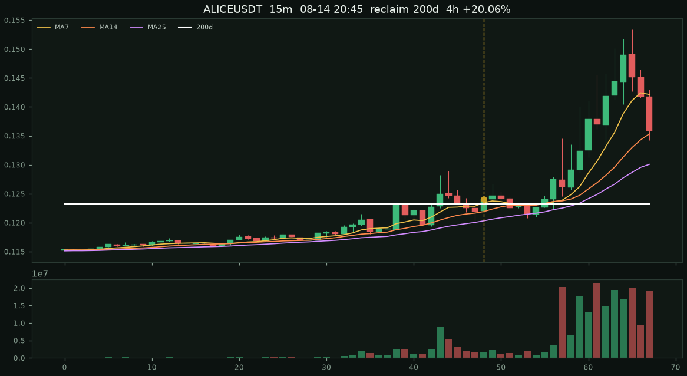
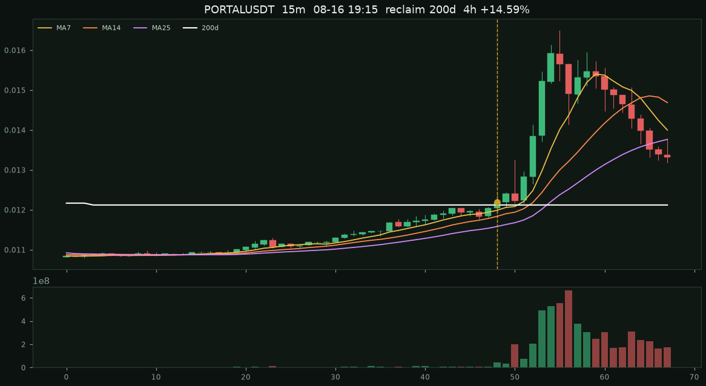
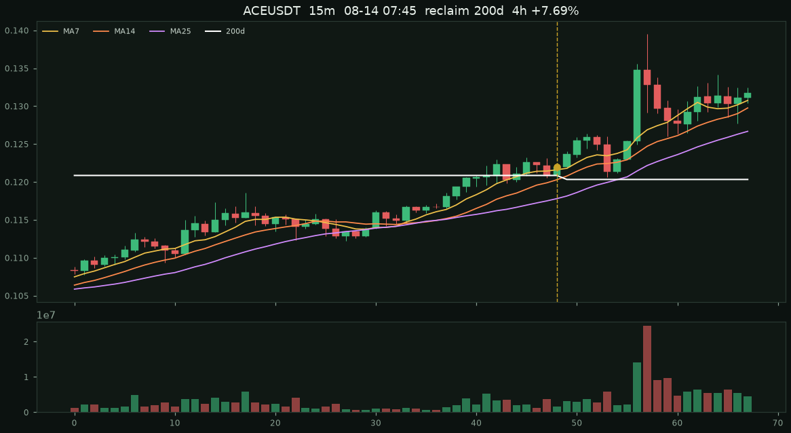
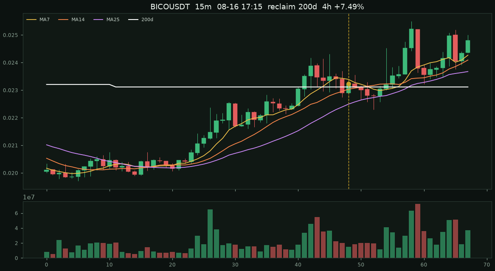
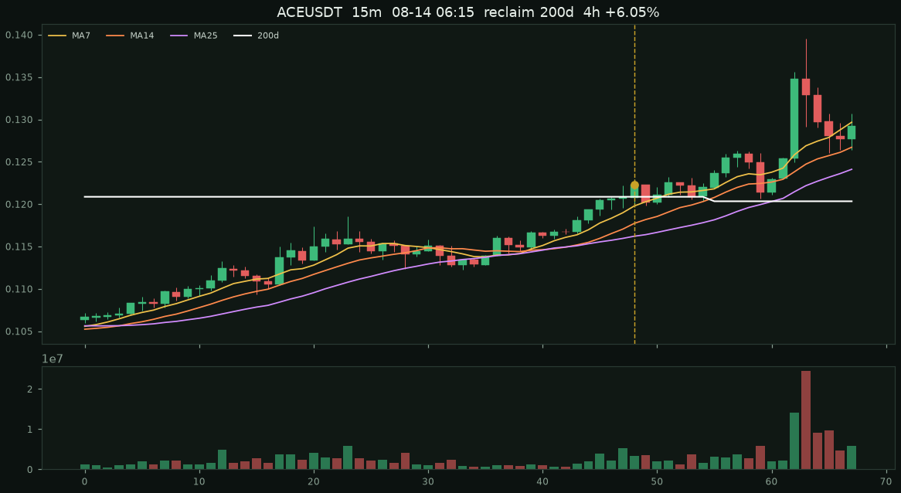
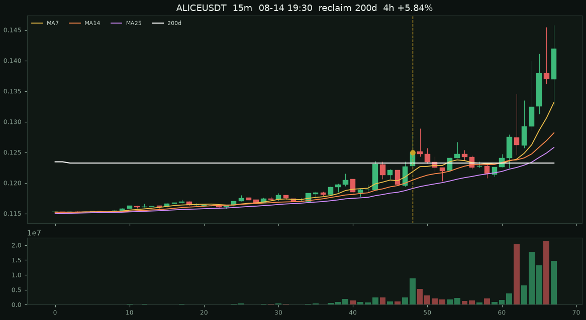
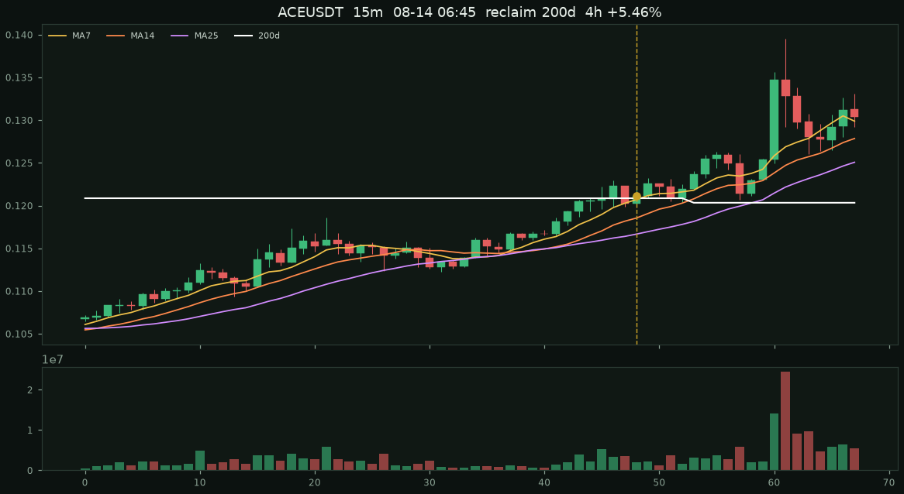
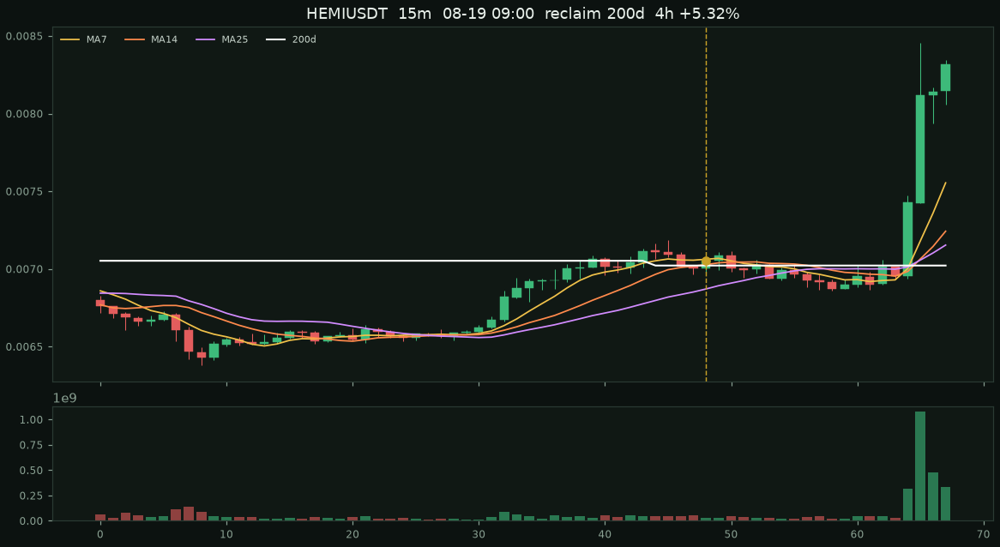
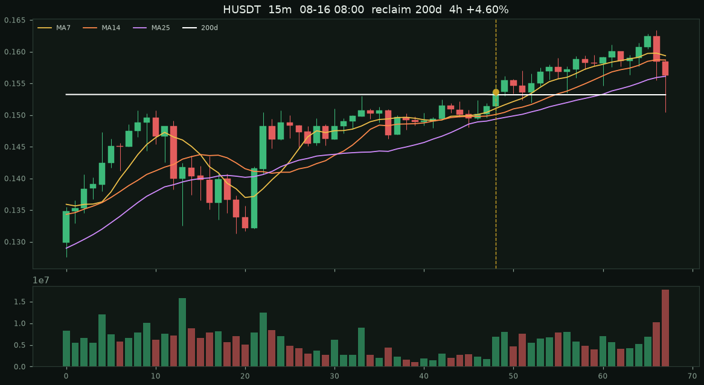
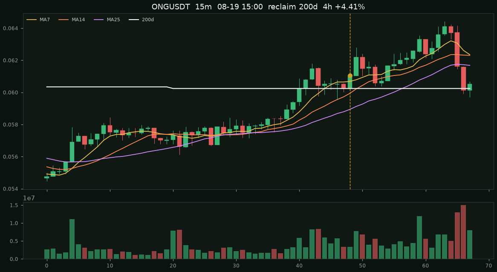
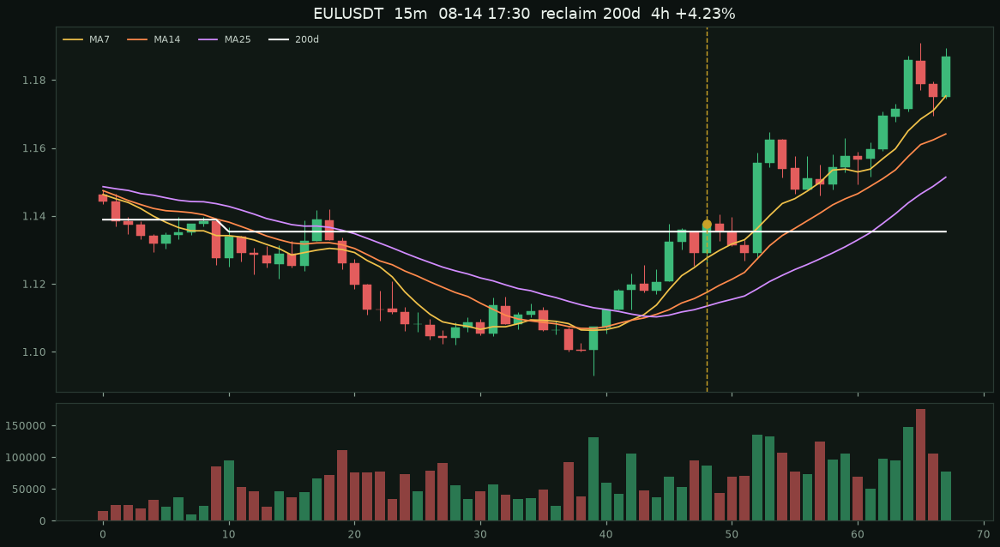
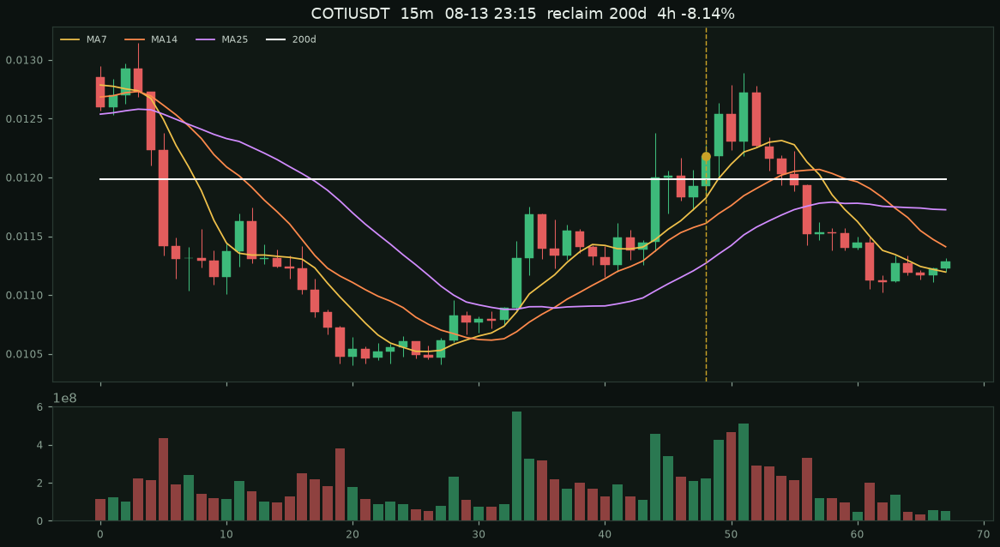
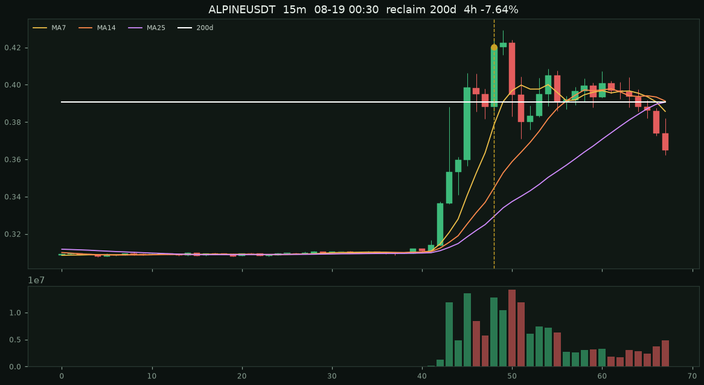
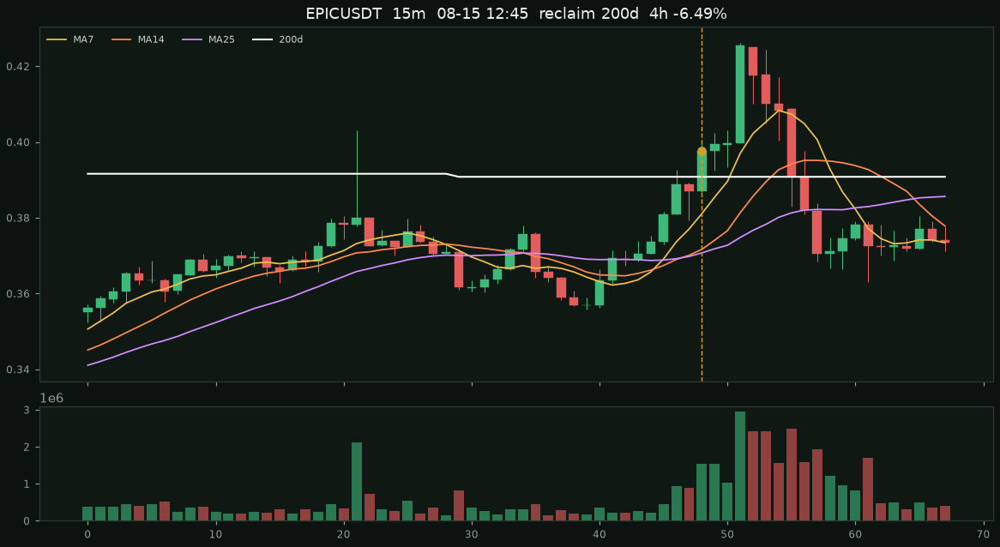
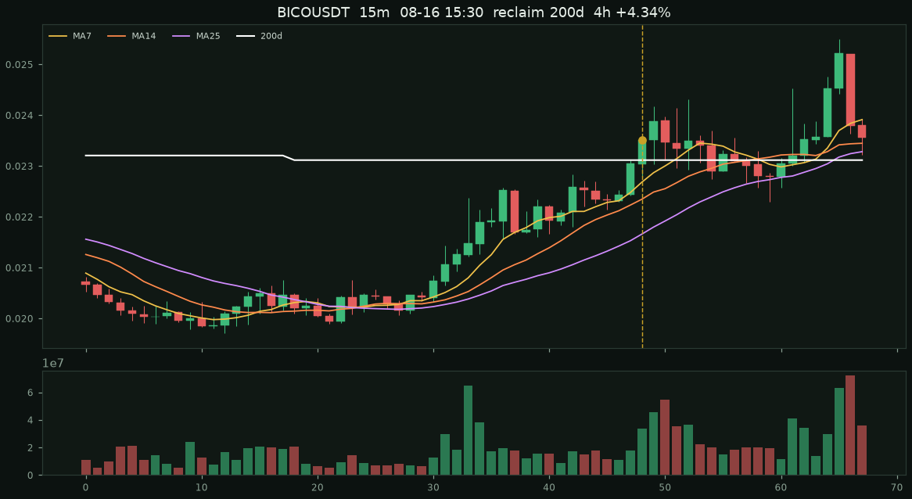
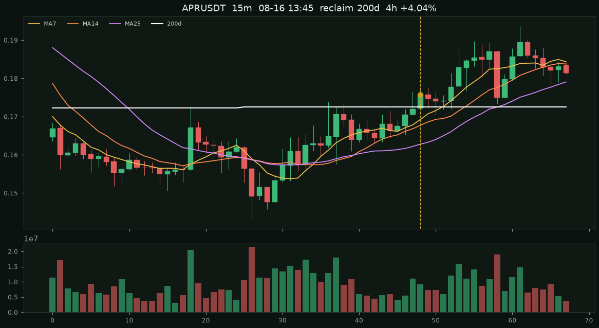
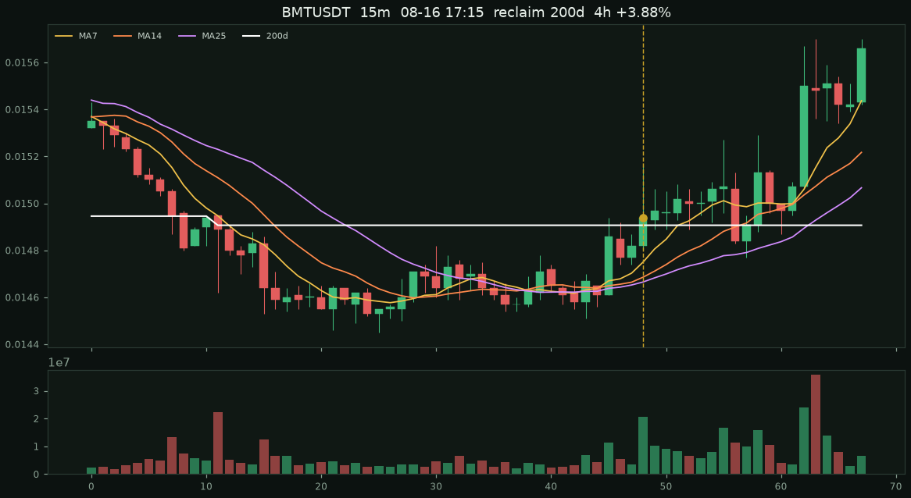
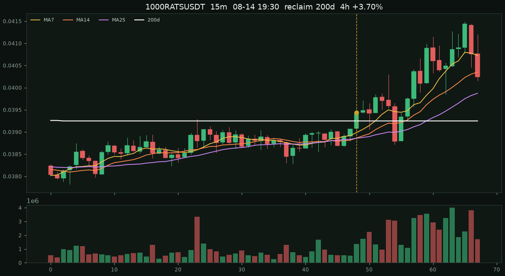
| 條件 | 筆數 | 15m假突破 | 15m勝率 | 15m均 | 1h勝率 | 1h均 | 4h勝率 | 4h均 | 8h勝率 | 8h均 |
|---|---|---|---|---|---|---|---|---|---|---|
| 原始：7>14>25 且收盤站上 200 日（組合剛成立） | 1183 | 2.5% | 49.4% | +0.04% | 45.3% | +0.03% | 44.6% | -0.24% | 45.5% | -0.16% |
| 本根剛站上 200 日 | 92 | 31.5% | 53.3% | +0.04% | 50.0% | -0.05% | 51.8% | +0.35% | 56.6% | +1.78% |
| 已在 200 日上，本根才多頭排列 | 1091 | 0.0% | 49.0% | +0.04% | 44.9% | +0.03% | 44.0% | -0.29% | 44.6% | -0.31% |
| 放量 ≥ 1.5× | 318 | 2.2% | 50.9% | +0.15% | 46.0% | +0.32% | 43.8% | -0.07% | 43.8% | +0.27% |
| 剛站上 200 日 + 放量 ≥ 1.5× | 44 | 15.9% | 61.4% | -0.04% | 50.0% | -0.11% | 51.4% | -0.26% | 48.6% | +0.80% |
| 距 200 日 ≤ 1.0% | 136 | 18.4% | 48.5% | +0.12% | 45.1% | +0.17% | 45.4% | +0.54% | 45.6% | +1.55% |
距 200 日 =（收盤 / 日線 MA200 − 1）× 100%。量比 = 當根量 / 20 根均量。
| 時間 | 標的 | 種類 | 進場 | 量比 | 距200日 | 15m | 1h | 4h | 8h |
|---|---|---|---|---|---|---|---|---|---|
| 08-14 20:45 | ALICE | 站上200日 | 0.1241 | 0.86 | +0.69% | +0.48% | -1.05% | +20.06% | +12.57% |
| 08-16 19:15 | PORTAL | 站上200日 | 0.0122 | 4.91 | +0.65% | +1.72% | +13.52% | +14.59% | +41.23% |
| 08-14 07:45 | ACE | 站上200日 | 0.12197 | 0.81 | +0.93% | +1.38% | +2.46% | +7.69% | +21.98% |
| 08-16 17:15 | BICO | 站上200日 | 0.02323 | 0.67 | +0.53% | -0.60% | -1.89% | +7.49% | -2.54% |
| 08-14 06:15 | ACE | 站上200日 | 0.12232 | 2.03 | +1.20% | -1.70% | -0.09% | +6.05% | +12.90% |
| 08-14 19:30 | ALICE | 站上200日 | 0.1251 | 6.55 | +1.43% | -0.32% | -2.56% | +5.84% | +11.91% |
| 08-14 06:45 | ACE | 站上200日 | 0.12111 | 1.10 | +0.20% | +1.21% | +0.73% | +5.46% | +17.84% |
| 08-19 09:00 | HEMI | 站上200日 | 0.007052 | 0.77 | +0.44% | +0.50% | -0.38% | +5.32% | +9.74% |
| 08-16 08:00 | H | 站上200日 | 0.15367 | 2.21 | +0.31% | +1.18% | +0.89% | +4.60% | +7.25% |
| 08-19 15:00 | ONG | 站上200日 | 0.06103 | 0.92 | +1.34% | +1.90% | -0.74% | +4.41% | +0.70% |
| 08-16 15:30 | BICO | 站上200日 | 0.02351 | 1.69 | +1.74% | +1.57% | -0.04% | +4.34% | +5.40% |
| 08-14 17:30 | EUL | 站上200日 | 1.1377 | 1.47 | +0.21% | -0.21% | +1.57% | +4.23% | +3.23% |
| 08-16 13:45 | APR | 站上200日 | 0.1758 | 0.90 | +1.89% | -0.63% | +1.14% | +4.04% | +12.29% |
| 08-16 17:15 | BMT | 站上200日 | 0.01493 | 3.97 | +0.22% | +0.27% | +0.47% | +3.88% | -0.80% |
| 08-14 19:30 | 1000RATS | 站上200日 | 0.03944 | 1.83 | +0.49% | +0.13% | +0.66% | +3.70% | -2.69% |
| 08-14 18:30 | EUL | 站上200日 | 1.1557 | 2.05 | +1.78% | +0.59% | -0.40% | +3.47% | +3.12% |
| 08-15 22:15 | 1000RATS | 站上200日 | 0.03937 | 2.00 | +0.35% | -0.38% | +0.05% | +3.28% | +3.35% |
| 08-14 17:00 | EUL | 站上200日 | 1.1353 | 0.92 | +0.04% | -0.55% | -0.34% | +3.00% | +3.23% |
| 08-17 09:45 | BMT | 站上200日 | 0.01495 | 0.50 | +0.54% | -1.07% | -1.27% | +2.94% | +1.20% |
| 08-18 05:15 | XPIN | 站上200日 | 0.001458 | 0.44 | +0.64% | -0.75% | +1.58% | +2.67% | -7.06% |
| 08-18 05:45 | XPIN | 站上200日 | 0.00146 | 0.38 | +0.71% | +1.71% | +1.10% | +2.60% | -4.45% |
| 08-18 11:00 | CLO | 站上200日 | 0.11856 | 7.69 | +1.79% | +2.51% | +8.76% | +2.46% | +17.39% |
| 08-17 13:30 | EUL | 站上200日 | 1.1354 | 1.47 | +0.90% | +0.55% | +0.22% | +2.44% | +6.48% |
| 08-19 13:15 | ONG | 站上200日 | 0.06081 | 1.23 | +0.92% | +1.09% | -0.41% | +2.17% | +0.71% |
| 08-16 19:30 | BMT | 站上200日 | 0.01491 | 1.30 | +0.02% | +1.48% | +1.07% | +2.08% | -0.27% |
| 08-17 10:45 | ORDI | 站上200日 | 3.376 | 1.14 | +0.05% | +0.09% | +0.62% | +2.01% | +0.56% |
| 08-17 22:30 | HEMI | 站上200日 | 0.007157 | 5.91 | +1.09% | -3.51% | -4.22% | +1.61% | -3.26% |
| 08-14 21:30 | LINK | 站上200日 | 8.821 | 0.68 | +0.02% | +0.17% | -0.29% | +1.26% | +1.32% |
| 08-18 22:00 | ORDI | 站上200日 | 3.374 | 5.83 | +0.05% | +1.27% | +1.36% | +1.24% | +0.77% |
| 08-19 18:30 | ORDI | 站上200日 | 3.377 | 0.70 | +0.17% | -0.18% | -0.03% | +1.24% | — |
| 08-18 03:15 | XPIN | 站上200日 | 0.001455 | 1.50 | +0.43% | +1.51% | -0.34% | +1.24% | +5.22% |
| 08-15 03:00 | ETHFI | 站上200日 | 0.4431 | 3.05 | +1.78% | +1.31% | +2.39% | +0.93% | +1.87% |
| 08-15 05:00 | NIL | 站上200日 | 0.04468 | 4.30 | +0.31% | -0.94% | -3.27% | +0.78% | +4.81% |
| 08-15 05:45 | NIL | 站上200日 | 0.04472 | 0.66 | +0.38% | -3.35% | +1.77% | +0.65% | +7.31% |
| 08-17 10:45 | INJ | 站上200日 | 4.143 | 3.29 | +0.56% | +0.17% | +0.12% | +0.51% | -0.75% |
| 08-14 04:45 | LINK | 站上200日 | 8.836 | 0.44 | +0.03% | +0.12% | +0.37% | +0.37% | -0.50% |
| 08-19 09:30 | INJ | 站上200日 | 4.139 | 3.19 | +0.48% | -0.14% | -0.02% | +0.34% | +1.69% |
| 08-19 13:00 | NEAR | 站上200日 | 1.599 | 1.41 | +0.48% | -0.19% | +0.06% | +0.31% | +1.44% |
| 08-14 04:00 | LINK | 站上200日 | 8.844 | 1.69 | +0.12% | -0.08% | +0.03% | +0.26% | -0.26% |
| 08-15 10:45 | AERO | 站上200日 | 0.4025 | 0.74 | +0.09% | +0.07% | -0.02% | +0.17% | +0.10% |
| 08-15 10:15 | AERO | 站上200日 | 0.4024 | 1.37 | +0.07% | -0.07% | -0.05% | +0.12% | +0.45% |
| 08-13 22:00 | MET | 站上200日 | 0.1637 | 2.29 | +1.03% | -0.31% | -0.06% | +0.06% | +0.31% |
| 08-16 16:45 | AERO | 站上200日 | 0.4019 | 0.33 | +0.05% | -0.22% | -0.12% | +0.02% | +1.24% |
| 08-17 00:30 | SUN | 站上200日 | 0.017825 | 0.82 | +0.01% | -0.03% | +0.02% | +0.02% | +0.25% |
| 08-14 20:15 | LINK | 站上200日 | 8.858 | 0.66 | +0.43% | +0.09% | -0.52% | -0.01% | +0.96% |
| 08-14 19:15 | LINK | 站上200日 | 8.836 | 2.61 | +0.18% | -0.05% | +0.25% | -0.01% | +1.28% |
| 08-15 19:15 | AERO | 站上200日 | 0.4021 | 0.59 | +0.02% | -0.05% | -0.42% | -0.02% | -0.12% |
| 08-15 07:45 | AERO | 站上200日 | 0.4027 | 1.35 | +0.08% | -0.57% | -0.47% | -0.07% | +0.10% |
| 08-13 21:15 | EUL | 站上200日 | 1.1411 | 0.65 | +0.20% | +0.03% | +0.04% | -0.09% | +0.43% |
| 08-13 21:15 | MET | 站上200日 | 0.1625 | 2.76 | +0.29% | +0.06% | +0.43% | -0.31% | +0.92% |
| 08-19 19:45 | ONG | 站上200日 | 0.06051 | 1.26 | +0.48% | +0.25% | +1.12% | -0.31% | — |
| 08-14 23:15 | CAKE | 站上200日 | 1.4185 | 0.75 | +0.01% | -0.07% | +0.08% | -0.32% | +0.44% |
| 08-15 00:00 | CAKE | 站上200日 | 1.4227 | 2.71 | +0.30% | -0.21% | -0.19% | -0.34% | +0.30% |
| 08-15 23:45 | AERO | 站上200日 | 0.4025 | 0.45 | +0.09% | -0.22% | -0.20% | -0.35% | -0.70% |
| 08-18 23:45 | ALPINE | 站上200日 | 0.3983 | 8.48 | +1.99% | -0.83% | +6.05% | -0.38% | -5.55% |
| 08-16 23:15 | INJ | 站上200日 | 4.128 | 0.45 | +0.17% | -0.10% | +0.19% | -0.39% | -1.38% |
| 08-16 22:45 | INJ | 站上200日 | 4.124 | 1.41 | +0.08% | -0.10% | +0.17% | -0.44% | -1.21% |
| 08-14 00:00 | MET | 站上200日 | 0.1629 | 1.10 | +0.41% | -0.61% | -0.49% | -0.49% | +5.03% |
| 08-13 22:30 | LINK | 站上200日 | 8.835 | 1.29 | +0.02% | +0.10% | -0.44% | -0.53% | +0.24% |
| 08-18 01:15 | INJ | 站上200日 | 4.122 | 0.55 | +0.08% | -0.19% | -0.02% | -0.63% | -1.26% |
| 08-16 06:15 | HEMI | 站上200日 | 0.007184 | 0.71 | +0.30% | +1.50% | -3.86% | -0.75% | +15.66% |
| 08-18 01:45 | INJ | 站上200日 | 4.119 | 0.28 | +0.00% | -0.02% | +0.19% | -1.04% | -1.53% |
| 08-15 16:45 | STABLE | 站上200日 | 0.0315 | 1.85 | +0.21% | -0.29% | -0.54% | -1.14% | -1.78% |
| 08-14 05:30 | ETHFI | 站上200日 | 0.445 | 3.18 | +2.05% | -1.35% | -1.24% | -1.19% | -3.42% |
| 08-15 17:15 | STABLE | 站上200日 | 0.03144 | 1.38 | +0.05% | -0.29% | -0.54% | -1.21% | -1.84% |
| 08-17 17:30 | CLO | 站上200日 | 0.11756 | 5.64 | +0.50% | -0.53% | -1.31% | -1.33% | -1.32% |
| 08-19 06:45 | HEMI | 站上200日 | 0.007063 | 0.91 | +0.15% | -0.68% | +0.75% | -1.36% | +26.67% |
| 08-14 21:15 | 1000RATS | 站上200日 | 0.03935 | 1.06 | +0.23% | +1.02% | +3.91% | -1.40% | -2.44% |
| 08-17 00:15 | WLD | 站上200日 | 0.3638 | 3.39 | +0.76% | +0.63% | +0.69% | -1.40% | -1.48% |
| 08-15 06:15 | NIL | 站上200日 | 0.04456 | 1.76 | +0.07% | +0.88% | +3.48% | -1.77% | +10.75% |
| 08-19 07:45 | HEMI | 站上200日 | 0.007119 | 1.19 | +0.90% | -0.13% | -1.60% | -3.09% | +20.86% |
| 08-16 02:00 | HEMI | 站上200日 | 0.007336 | 2.34 | +2.33% | +0.76% | -4.83% | -3.24% | -4.10% |
| 08-18 15:00 | ONG | 站上200日 | 0.06077 | 1.47 | +0.70% | -0.71% | -3.51% | -3.29% | -7.68% |
| 08-13 22:15 | COTI | 站上200日 | 0.012003 | 2.43 | +0.10% | +0.09% | +1.49% | -4.67% | -8.31% |
| 08-13 01:15 | COTI | 站上200日 | 0.01302 | 8.56 | +8.35% | +3.86% | -4.45% | -4.68% | -4.35% |
| 08-18 00:30 | HEMI | 站上200日 | 0.007261 | 1.52 | +2.48% | -1.16% | +2.04% | -4.81% | -5.41% |
| 08-17 09:00 | ONG | 站上200日 | 0.06183 | 7.70 | +2.29% | -5.05% | -4.82% | -5.69% | -6.99% |
| 08-18 17:00 | HEMI | 站上200日 | 0.007205 | 2.36 | +2.12% | +1.04% | -6.29% | -6.15% | -8.52% |
| 08-18 01:15 | HEMI | 站上200日 | 0.007351 | 1.38 | +3.75% | +0.79% | +0.69% | -6.26% | -6.83% |
| 08-19 01:45 | ALPINE | 站上200日 | 0.395 | 1.37 | +1.14% | +2.53% | +0.41% | -6.30% | -8.99% |